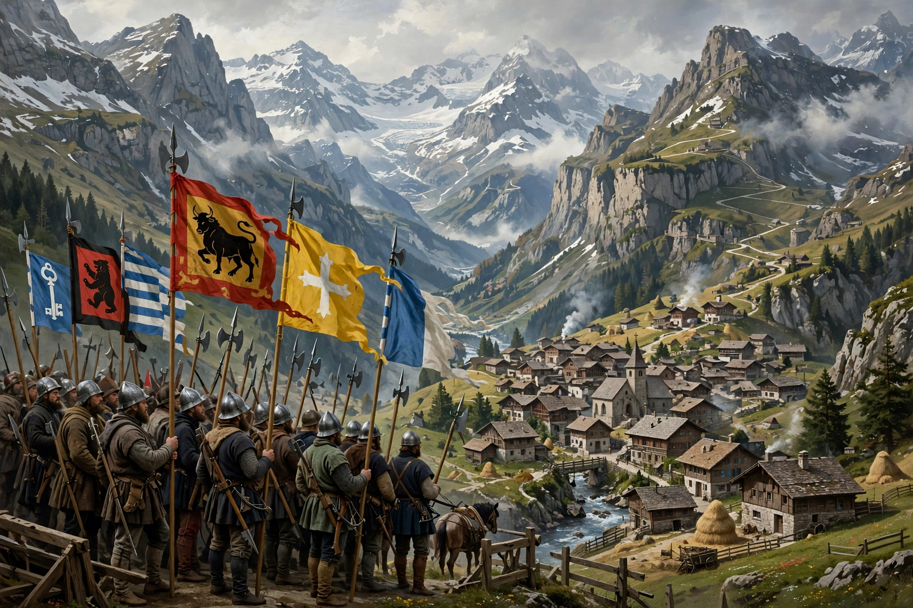

The Old Swiss Confederacy, or Swiss Confederation (German: Alte Eidgenossenschaft), was a loose confederation of largely independent small states (cantons) within the Holy Roman Empire, and later outside it, that formed the nucleus of the modern state of Switzerland. It developed between the late 13th century and 1798, when the French invasion proclaimed the Helvetic Republic.
| Old Swiss Confederacy | |
|---|---|
 The Confederacy and its associates, 18th century | |
| Established | traditionally 1 August 1291 (Federal Charter) |
| Government | Confederation of cantons; Tagsatzung diet |
| Key stages | Eight Cantons (1353); Thirteen Cantons (1513) |
| Dissolved | 1798 (French invasion) |
Tradition dates the founding to the Federal Charter of early August 1291, a defensive pact among the valley communities of Uri, Schwyz and Unterwalden, later embroidered by the legends of the Rütli oath and William Tell. Victory over Habsburg knights at Morgarten (1315) secured the alliance's survival. Lucerne, Zurich, Glarus, Zug and Bern joined by 1353, forming the "Eight Cantons" (Acht Orte).
Confederate infantry won a formidable reputation through victories over Burgundy in the Burgundian Wars (1474–77), including Grandson and Morat, and over the Empire in the Swabian War (1499), after which the Peace of Basel recognised the Confederacy's practical independence from imperial jurisdiction. Fribourg, Solothurn, Basel, Schaffhausen and Appenzell completed the Thirteen Cantons by 1513. The defeat at Marignano (1515) ended Swiss territorial expansion and began the tradition of Swiss mercenary service abroad and eventual neutrality; formal recognition of independence came in the Peace of Westphalia in 1648.
The Confederacy had no capital, constitution or standing army; the Tagsatzung, an assembly of cantonal envoys, coordinated war and foreign affairs, while cantons jointly ruled conquered "common lordships." Confessional division after the Reformation (Kappel Wars, 1529/1531) froze into a tense Catholic–Protestant balance. The conservative, oligarchic confederation collapsed quickly before French revolutionary armies in 1798.